Windshield Glass Removal |
| 1. Remove Front Wiper Arm Head Cap |
 |
Remove the 2 front wiper arm head caps.
| 2. Remove Front Wiper Arm & Blade Assembly RH |
 |
Remove the front wiper arm nut and front wiper arm & blade assembly RH.
| 3. Remove Front Wiper Arm & Blade Assembly LH |
 |
Remove the front wiper arm nut and front wiper arm & blade assembly LH.
| 4. Remove Hood to Cowl Top Seal |
 |
Disengage the 7 clips and remove the hood to cowl top seal.
| 5. Remove Front Side Panel Protector NO.1 LH |
 |
Disengage the pin and remove front side panel protector NO.1 LH.
| 6. Remove Cowl Top Ventilator Louver LH |
 |
Disengage the 11 claws and remove the cowl top ventilator louver LH as shown in the illustration.
| 7. Remove Front Side Panel Protector NO.1 RH |
 |
Disengage the pin and remove front side panel protector NO.1 RH.
| 8. Remove Cowl Top Ventilator Louver RH |
 |
Disengage the 5 claws and remove the cowl top ventilator louver RH as shown in the illustration.
| 9. Remove Inner Rear View Mirror Assembly (Normal Inner Mirror) |
 |
Disengage the 2 claws and remove the inner rear view mirror cover.
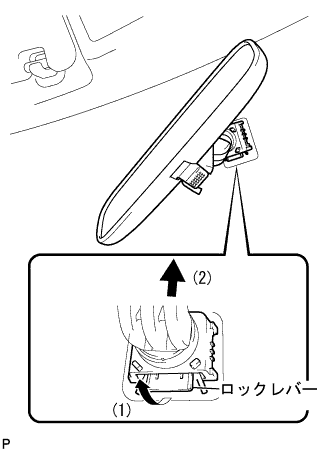 |
Push the lock lever in the direction of arrow (1) shown in the illustration to release it, and slide the inner rear view mirror assembly in the direction of arrow (2) shown in the illustration to remove it.
| 10. Remove Inner Rear View Mirror Stay Holder Cover (EC Inner Mirror) |
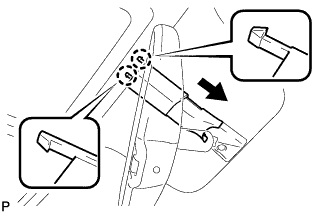 |
Disengage the 2 claws and slide the inner rear view mirror cover in the direction of the arrow shown in the illustration.
 |
Disengage the 6 claws and remove the inner rear view mirror cover.
| 11. Remove Inner Rear View Mirror Assembly (EC Inner Mirror) |
 |
Disconnect the connector.
Using a torx socket wrench (T20), remove the screw.
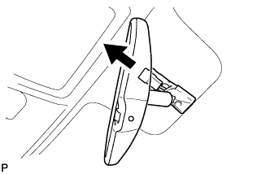 |
Slide the inner rear view mirror assembly in the direction of the arrow shown in the illustration and remove it.
| 12. Remove Front Pillar Garnish Corner Piece RH |
 |
Apply protective tape to the positions shown in the illustration.
Using a thin flat-tip screwdriver wrapped with protective tape, disengage the 5 claws and 2 guides A.
Disengage the 2 guides B and remove the front pillar garnish corner piece RH.
| 13. Remove Front Pillar Garnish RH |
 |
Pull the upper part of the garnish in the direction of arrow (1) shown in the illustration to disengage the clip and front pillar garnish clip.
Using nippers or equivalent, cut the front pillar garnish clip.
Pull the garnish in the direction of arrow (2) shown in the illustration, disengage the guide and remove the front pillar garnish RH.
Using a clip remover, remove the front pillar garnish clip from the front pillar RH.
 |
Curtain Shield Airbag Protection
Using cloth or nylon, wrap the airbag portion as shown in the illustration and fix both ends of the cloth or nylon with packing tape.
| 14. Remove Front Pillar Garnish Corner Piece LH |
| 15. Remove Front Pillar Garnish LH |
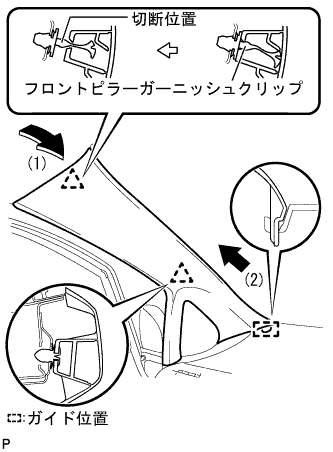 |
Pull the upper part of the garnish in the direction of arrow (1) shown in the illustration to disengage the 2 clips.
Using nippers or equivalent, cut the front pillar garnish clip.
Pull the garnish in the direction of arrow (2) shown in the illustration, disengage the guide and remove the front pillar garnish LH.
Using a clip remover, remove the front pillar garnish clip from the front pillar LH.
 |
Curtain Shield Airbag Protection
Using cloth or nylon, wrap the airbag portion as shown in the illustration and fix both ends of the cloth or nylon with packing tape.
| 16. Remove Front Door Opening Trim Weatherstrip RH |
 |
Remove the front door opening weatherstrip RH.
| 17. Remove Front Door Opening Trim Weatherstrip LH |
| 18. Remove Map Light Assembly (w/o Interior Illumination Light) |
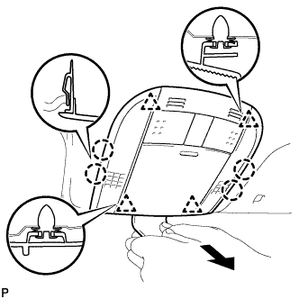 |
Using a roof molding remover, disengage the 4 claws and 4 clips.
Disconnect each connector and remove the map light assembly.
| 19. Remove Interior Illumination Light Assembly NO.1 (w/ Interior Illumination Light) |
 |
Using a roof molding remover, detach the clips in order from the front.
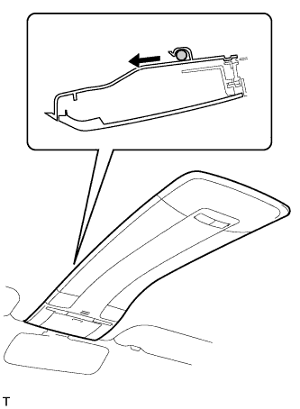 |
Detach the harness at the position shown in the illustration from the clamp.
Disconnect the connector and remove interior illumination light assembly NO.1.
| 20. Remove Visor Assembly RH |
 |
Using a roof molding remover, disengage the 4 claws and remove the visor bracket cover.
 |
Disengage the 2 springs and remove the visor assembly RH.
Remove the 2 springs from the vehicle.
| 21. Remove Visor Assembly LH |
| 22. Remove Assist Grip |
 |
Using a clip remover wrapped with protective tape, disengage the 4 claws of the assist grip cover.
Pull out the 2 assist grip covers by hand to remove them.
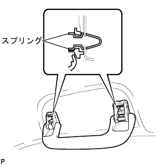 |
Disengage the 2 springs and remove the assist grip.
Remove the 2 springs from the vehicle.
| 23. Remove Room Light Assembly NO.1 |
 |
Using a thin flat-tip screwdriver wrapped with protective tape, pry the cutout of the lens cover to disengage the 4 claws and remove the room light lens.
 |
Disengage the claws.
Disengage the guide and remove the room light cover.
 |
Using a flat-tip screwdriver wrapped with protective tape, push the 2 levers in the direction of the arrow so that the 2 claws A are disengaged.
Disengage the 2 claws B.
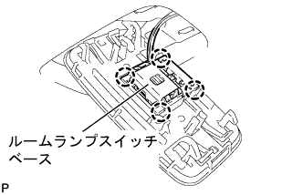 |
Using a thin flat-tip screwdriver, disengage the 4 claws and remove room light assembly No.1 from the room light switch base.
| 24. Remove Visor Holder |
 |
Turn the tip of the visor holder clockwise approximately 45° and pull out the tip of the visor holder.
Disengage the 2 claws and remove the visor holder.
| 25. Remove Roof Headlining Assembly |
| 26. Remove Windshield Glass Assembly |
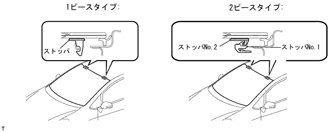
Apply protective tape to the body surface around the windshield glass.
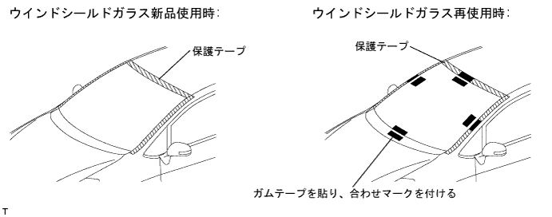
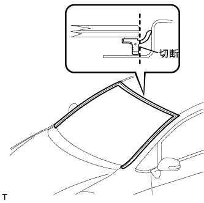 |
Using a utility knife, cut the windshield outside moulding.
Attach suction cups to the windshield glass.
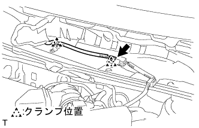 |
Using a clip remover, disengage the 2 clamps and disconnect the front window deicer connector. (w/ Cold Area Specification)
 |
When using a windshield knife
Apply plenty of soapy water to the bonded area.
Insert the windshield knife into the bonded area.
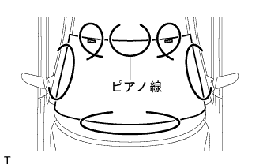 |
When using piano wire
Pass piano wire (0.6mm is suitable) through as shown in the illustration, and attach both ends to a mighty puller.
Pull the piano wire alternately to cut the windshield glass adhesive, leaving the windshield glass stoppers.
Holding the suction cups, disengage the windshield glass stoppers and remove the windshield glass assembly.
| 27. Remove Window Glass Adhesive Dam NO.2 |
Using a scraper, remove the windshield glass adhesive dam. (When reusing windshield glass)
| 28. Remove Windshield Glass Stopper (Stopper 1 Piece Type) |
Remove the windshield glass stopper. (When reusing windshield glass)
| 29. Remove Windshield Glass Stopper NO.2 (Stopper 2 Piece Type) |
Using a scraper, remove windshield glass stopper No.2. (When reusing windshield glass)
| 30. Remove Windshield Glass Stopper NO.1 (Stopper 2 Piece Type) |
 |
Remove windshield glass stopper No.1.